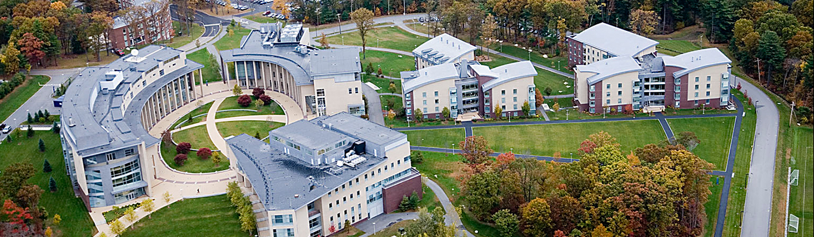
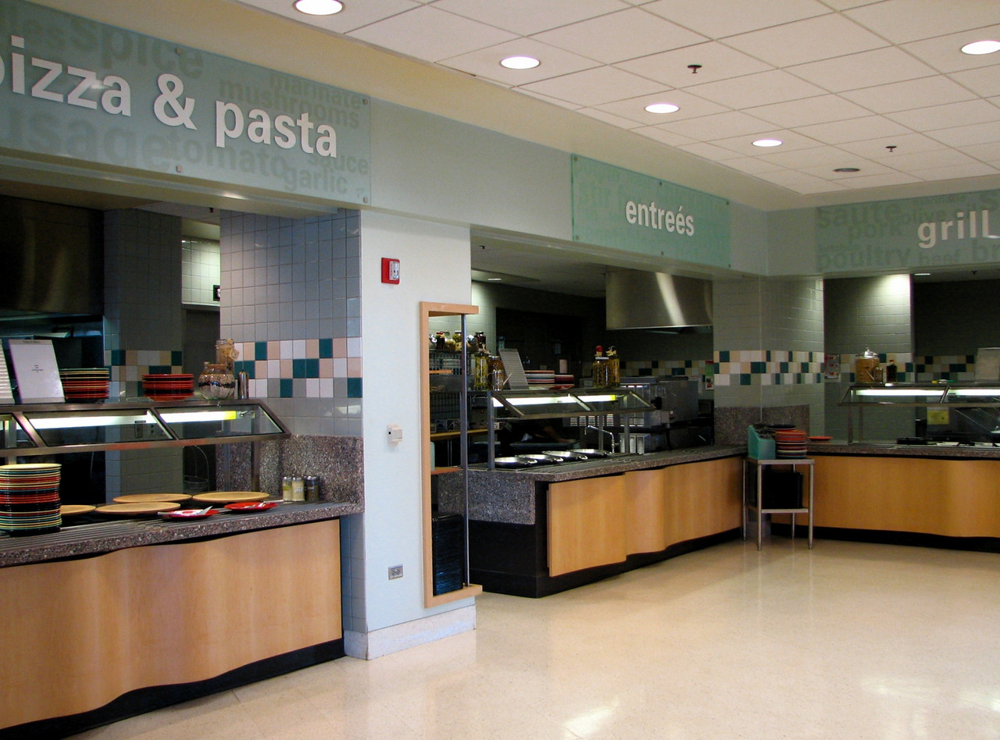

Campus


The Olin college campus is relatively small, but sophisticated. Younger than many of its students, the campus was designed for the small class sizes and high-tech nature of the college. The campus features a machine shop, work spaces for individual projects, project storage spaces, and office-like space for start-up companies.